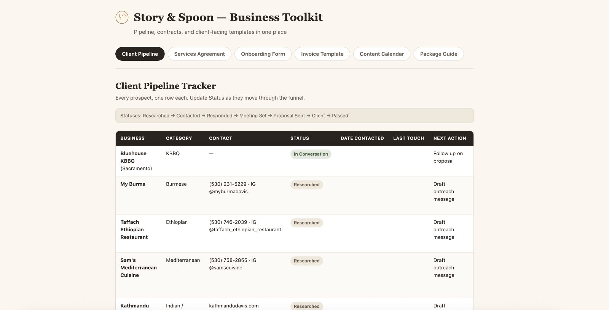
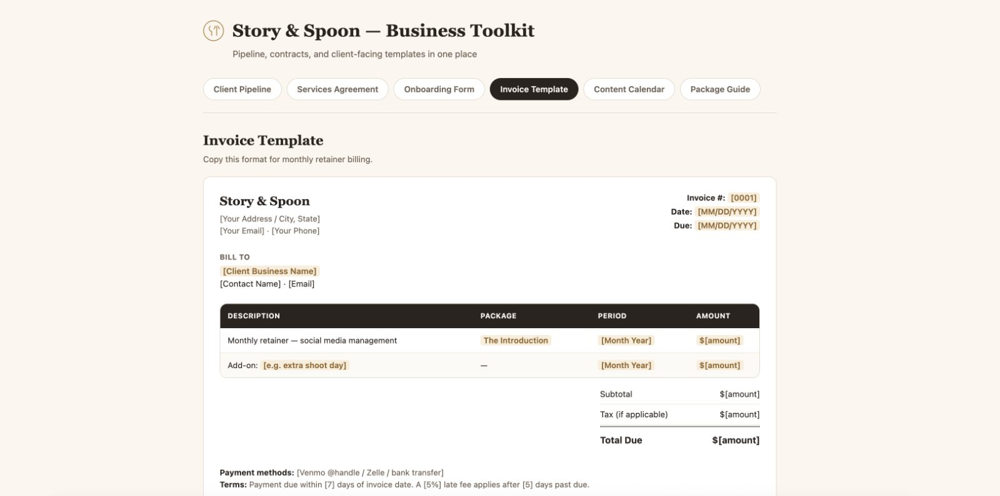
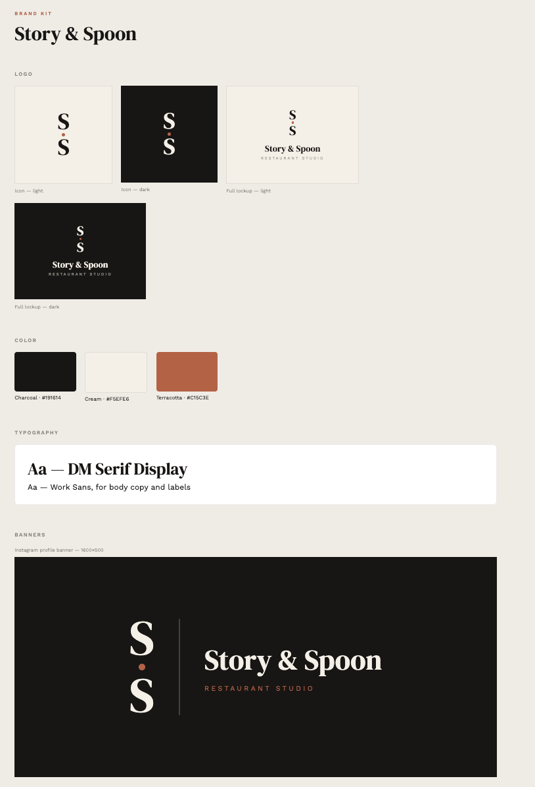

A marketing studio for the restaurants nobody markets.
Owner-operated restaurants in Davis and Sacramento have great food and no time. Story & Spoon gives them a website, Instagram, and Google presence in one shoot day and one launch.
Status: pre-launch. No paying clients yet — the numbers below are the research, outreach, and operations groundwork built before the first shoot day.
The food was the easy part.
Through DavisWithMaya I'd already worked with 30+ local businesses and seen the same thing every time: the food was the easy part. Most had an Instagram nobody ran, a website that didn't exist or didn't work, and a Google listing with the wrong hours. Story & Spoon is that gap turned into a product.
One shoot day. One launch.
Half Past. A café by morning, a bar by night, and a brand that finally says so.
Half Past is the restaurant we designed to show owners the full package before they sign: a Midtown café that runs two lives in one room — pastries and espresso at 7:00, cocktails and small plates by 9:00. We treated it like a real client from brief to launch, so a prospective restaurant can scroll the website, flip through the Instagram kit, and see exactly what they'd walk away with.
Before the first client, I built the machine so the studio could take one on tomorrow.



Every restaurant I pitch has already seen this work — it's why the DMs get answered.
A venture in market, not a finished story.
No published client results yet — the numbers on this page are pipeline, not outcomes. What's here is the judgment and the system.